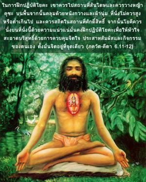
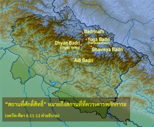
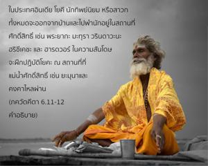
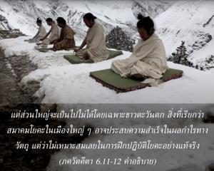

ในการฝึกปฏิบัติโยคะเขาควรไปที่สถานที่สันโดษและควรวางหญ้า กุศ บนพื้น จากนั้นคลุมด้วยหนังกวางและผ้านุ่ม ที่นั่งไม่ควรสูงหรือต่ำเกินไป และควรอยู่ในสถานที่ศักดิ์สิทธิ์ จากนั้นโยคีควรนั่งบนที่นั่งนี้ด้วยความแน่วแน่มั่นคง ฝึกปฏิบัติโยคะเพื่อให้หัวใจสะอาดบริสุทธิ์ด้วยการควบคุมจิตใจ ประสาทสัมผัส และกิจกรรมของตนเอง ตั้งมั่นจิตอยู่ที่จุดเดียว




“สถานที่ศักดิ์สิทธิ์” หมายถึงสถานที่ที่ควรเคารพสักการะ ในประเทศอินเดียโยคีนักทิพย์นิยม หรือสาวกนั้นทั้งหมดจะออกจากบ้านและไปพำนักอยู่ในสถานที่ศักดิ์สิทธิ์ เช่น ปฺรยาค, มถุรา, วฺฤนฺทาวน, หฺฤษีเกศ และ หรฺทฺวรฺ ในความสันโดษจะฝึกปฏิบัติโยคะ ณ สถานที่ที่แม่น้ำศักดิ์สิทธิ์ เช่น ยะมุนาและคงคาไหลผ่าน แต่ส่วนใหญ่จะเป็นไปไม่ได้โดยเฉพาะชาวตะวันตก สิ่งที่เรียกว่าสมาคมโยคะในเมืองใหญ่ๆอาจประสบความสำเร็จในผลกำไรทางวัตถุ แต่ว่าไม่เหมาะสมเลยในการฝึกปฏิบัติโยคะที่แท้จริง ผู้ที่ควบคุมตนเองไม่ได้และผู้ที่จิตใจไม่สงบไม่สามารถฝึกปฏิบัติสมาธิได้ ฉะนั้นใน พฺฤหนฺ-นารทีย ปุราณ ได้กล่าวไว้ว่าใน กลิ-ยุค (ยุคปัจจุบัน) เมื่อคนทั่วไปมีอายุสั้น เฉื่อยชาในความรู้ทิพย์ และถูกรบกวนจากความวิตกกังวลต่างๆอยู่เสมอ วิธีที่ดีที่สุดในการรู้แจ้งทิพย์คือ การสวดภาวนาพระนามอันศักดิ์สิทธิ์ขององค์ภควานฺ
หเรรฺ นาม หเรรฺ นาม
หเรรฺ นาไมว เกวลมฺ
กเลา นาสฺตฺยฺ เอว นาสฺตฺยฺ เอว
นาสฺตฺยฺ เอว คติรฺ อนฺยถา
“ในยุคแห่งการทะเลาะวิวาทและมือถือสากปากถือศีลนี้ วิธีแห่งความหลุดพ้นคือ การร้องเพลงสวดภาวนาพระนามอันศักดิ์สิทธิ์ขององค์ภควานฺ ไม่มีหนทางอื่นใด ไม่มีหนทางอื่นใด และไม่มีหนทางอื่นใด”